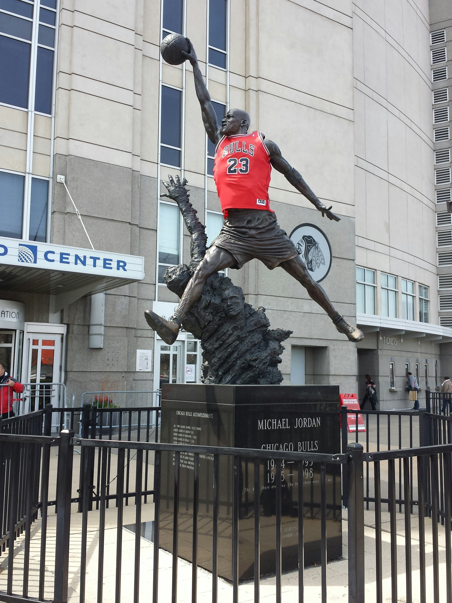

Album
D1MENSiONZ is a beat tape thats not only just instrumentals it's a soundtrack. It's a storytelling compilation capturing pivotal moments in our careers.
Castles
Castles is a special track. No overthinking just in the creative zone. Overall is less then twenty minutes. From the reversed melodies to the switches and hard basslines the track all the track is missing is a major artist to do their thing on it!

Michael Jordan
Michael Jordan one of my personal favorites from this compilation. The process was unique from what I usually do when creating as originally it had started with a drum groove them built melodies from the patterns and added onto the drums later on. Lastly what stood out to me is the leads I played it on my laptop keyboard and was messing around until something sparked an idea.
Victory Laps
Originally at 184 bpm, victory laps is a more storytelling instrumental as it contains two beats merged into one from the transition from the beat switches.